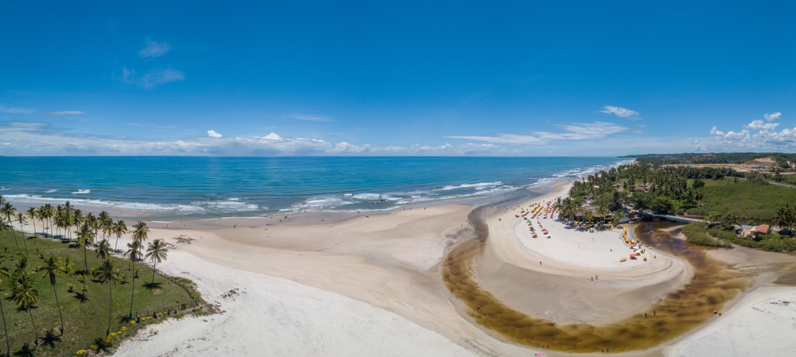
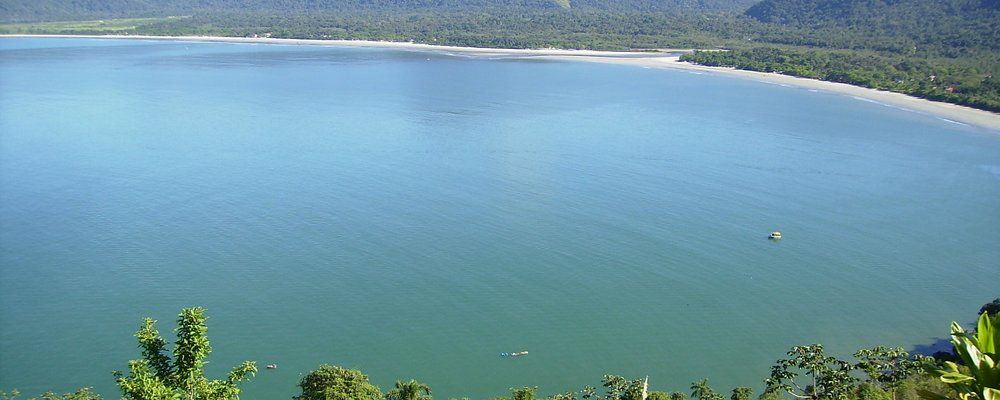
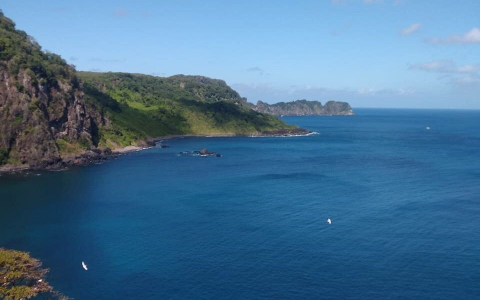
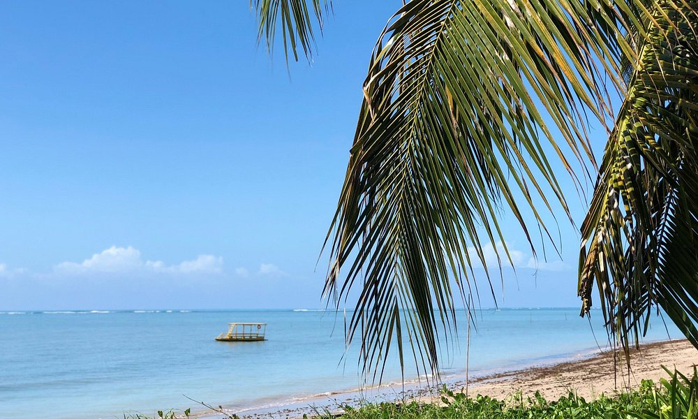

O Brasil é um dos países tropicais conhecidos pelas praias mais bonitas do planeta. confira as melhiores praias para esse verão.
Jericoacora
Jericoacoara é uma praia localizada na vila homônima, no município de Jijoca de Jericoacoara, no estado do Ceará, no Brasil. Está localizada a 295 km a oeste da capital do estado, Fortaleza. Foi eleita em 1994 pelo jornal estadunidense The Washington Post uma das dez praias mais bonitas do planeta.Em 2014, foi eleita pelo Huffington Post a quarta melhor praia da Terra.É um dos locais mais frequentados por praticantes de windsurfe no país. A praia é parte integrante do Parque Nacional de Jericoacoara.
atrações
Pedra Furada
Duna do pôr do sol
Igreja Nossa Senhora da Consolação
Serrote
Farol de Jericoacoara
Campo das dunas
Cururupe

A Praia do Cururupe é conhecida por sua limpeza e tranquilidade, tornando-a um refúgio perfeito para aqueles que buscam paz e relaxamento. As águas calmas e cristalinas oferecem oportunidades para um mergulho refrescante no mar ou um banho relaxante no rio Cururupe, que encontra o oceano neste local.
atrações
O encontro do rio com o mar.
As águas cristalinas.
As árvores que sercam o ambiente.
Ubatuba

Ubatuba é um paraíso litorâneo localizado no estado de São Paulo, famoso por suas incríveis praias. Com mais de 100 opções, desde praias deslumbrantes até desertas e intocadas, Ubatuba cativa turistas e amantes da natureza. Na região Sul, encontram-se praias populares como Praia do Bonete e Praia Grande.
Atrações
Centro historico
Alambique Engenho D'Ouro
Pedra da Marcela
Baía do Sancho

Uma das características mais notáveis da Baía do Sancho é sua biodiversidade marinha. Graças à clareza da água, é um local excelente para a prática de snorkeling e mergulho. Pois tartarugas, raias, e uma infinidade de peixes coloridos são vistos por aqueles que se aventuram sob as ondas.
atrações
Baía do Sancho
Baía dos Porcos
Praia do Cachorro
Praia do Patachó

A Praia do Patacho, em Porto de Pedras, é um paraíso para relaxar. O lugar tem milhares de coqueiros na beira do mar, recebe poucos visitantes, não tem comércio ou vendedores ambulantes e ainda oferece um mar calmo e de águas esverdeadas.
atrações
Passeios de bicicleta
Povoado do Tatumunha
Associação Peixe Boi
Cuidados no Verão
Todos nos queremos curtir as férias de verão da melhor forma possível. Fique ligado e siga as dicas a seguir.
Use protetor solar com fator de proteção adequado (FPS 30 ou mais) e reaplique a cada 2 horas, especialmente após entrar na água. A exposição prolongada ao sol pode causar queimaduras, envelhecimento precoce e aumentar o risco de câncer de pele.
Beba bastante água para manter-se hidratado, já que o calor intenso pode levar à desidratação. Evite consumir apenas bebidas alcoólicas, pois elas podem acelerar a desidratação.
Algumas praias possuem correntes fortes que podem arrastar nadadores para o mar aberto. Fique atento às bandeiras de sinalização e sempre nade em áreas supervisionadas por salva-vidas.
Evite o sol entre10h e 16h, quando os raios ultravioleta (UV) são mais intensos. Se estiver na praia nesse período, busque sombra e use acessórios de proteção, como chapéus, óculos escuros e roupas leves.
Coma alimentos leves e frescos. Evite comidas de origem duvidosa ou mal conservadas, pois o calor pode acelerar a deterioração e causar intoxicações alimentares.
Esses cuidados garantem maior segurança e conforto durante os dias de praia no verão.
Cuidados com as Crianças
Levar as crianças para a praia no verão é uma ótima maneira de aproveitar o sol e o mar, mas é importante seguir alguns cuidados para garantir a segurança e o bem-estar dos pequenos:
Use protetor solar infantil para as crianças. Aplique-o de meia em meia hora nos pequenos.
Leve lanche, suco ou água fresca. Ofereça com frequência a eles.
Sempre leve o kit de primeiros socorros, afinal, não se sabe oque pode acontecer.
Pacotes de Viagens
Abaixo trazemos sugestões de principais empresas para comprar seu pacote de viagens. Lembre-se verifique antes a reputação da empresa, não nos responsabilisamos por golpes. Reserve sua viagem com antecedência e esconomize.
Clique nos ícones e confira as promoções
Criadores do Site
Este site foi produzido por alunos dp curso de Desenvolvimento JS do SENAI. Abaixo está a localização da unidade em que ocorreu o curso.